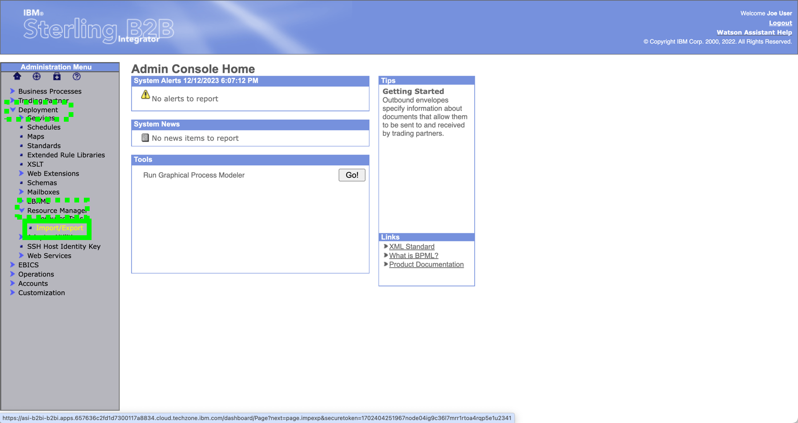

Demo 4 - FileGateway Unzip and Route
Demo 4 demonstrates a zipped file being sent into FileGateway, being unzipped, then the contents being routed to an appropriate mailbox for each file type.
The import does not have to be part of the demonstration. The business process, maps, envelopes etc. are imported via B2B integrator, but since the process was created in Sterling FileGateway, the partners, community, routing channel templates, and routing channel are best viewed there.
Before proceeding, take 3 minutes to listen to Thomas Limanek, B2B subject matter expert, explain the lab.
Import the FileGateway process
In the Demo 1 setup, the detailed steps inside Sterling FileGateway to create partners, community, routing channel template, and routing channel were shown. In demos 2 and 3, the import process was shown in detail, where each of the separate artifact groups was selected. In Demo 4, you will only be shown the fast version of doing the import for all resources. You should have already downloaded the B2BiDataAndImports.zip. If not, refer to Demo 1 in the Optional Shortcut section for details.
- If you are not currently logged in to B2Bi, launch the IBM Sterling B2Bi dashboard by clicking on the route for the sterling-fg-b2bi-asi-internal-route-dashboard route in the Location column. Do not click the Route name, rather click the Route link in the Location column of the table.

- Once logged in, click through Deployment, Resource Manager, Import/Export

- Select Go on the Import Resources panel

- On the File Name line click on Choose File

- Open the Demo4 Directory on your desktop where the B2BiLevel3ImportsAndData zip file was expanded. Under the Import folder Select file SFG-Lab4-Export.xml

- See that the SFG-Lab4-Export Import file has been selected, enter password in the password box, and check Import All Resources then click Next

- Keep the Create Resource* defaults and click Next**
- Allow updates to any existing resources by leaving Yes selected and clicking Next

- All of the resources to be Imported are shown. In this import the Community is Demo_SFG_Community, the partners are DemoAgents and Demo_TransactionSystem, the routing channel template is Demo_UNZip and the routing channel is defined with Demo_Unzip:Demo_Agents::Demo_TransactionSystem:Demo_Agents/Zip (The routing channel points to the Demo_Unzip routing channel template with producer Demo_Agents, consumer Demo_Tranaction_System, and initiating directoty of /Demo_Agents/Zip). Click on Finish to complete the Import.
BP quiz question
A BP quiz question will come from this review screen. Be sure to note the exact text on the Groups line.
In the next section you will review the results of the Import process in a view mode. You will logout of B2B Integrator and view the various pages in Sterling FileGateway.
Logout of B2B Integrator
View SFG configuration
Login to SFG
- Return to the OpenShift web console and click on the route link to the IBM Sterling File Gateway user interface (UI): sterling-fg-b2bi-asi-internal-route-filegateway.

- Enter fg_sysadmin in the User ID field, password in the Password field, and then click the Sign In button.

Once logged in to SFG follow these steps.
- Click the Participants pull-down menu item on top menu bar and Partners and see that Demo_Agents and Demo_TransactionSystem have been added. Note: Other partners may or may not already exist depending on the order you execute the labs.

- Click on partner Demo_Agents to see the detail. Then click on Return to exit out.

- On the Participants pull-down click on Communities.

- View that Demo_SFG_Community was created and then click on edit on that line to see details.
- View the Community Information then click on View in the Partner section.
- See that Demo_Agents and Demo_TransactionSystem are in the Partner List section. Then click on Return to exit.

- View the Routing Channel Template setup by clicking Routes then Templates. In here you can see how the zip file is expected via the regular expression from the producer, and how the various files are mailboxed after the unzipping.

- Clicking Routes then Channels you can see that the DemoUnzip Routing Channel Template is used in the Routing Channel. It has one direction, with Demo_Agents as the Producer and Demo_TransactionSystem as the consumer with Demo_Agents/Zip as the Producer Mailbox Path

Execute Demo 4
Important
The instructions in Demo 1 of this course document how to setup Filezilla for a secure SFTP transfer into a B2B Integrator mailbox. Note that the host will change for each time that B2Bi / SFG is provisioned on Techzone, so be sure that the Host on Filezilla is adjusted accordingly.
- For this lab ensure that the User is demo_agents and the Password is password. Finally, click on Connect.
- In the top panel on Filezilla, check that a connection was made. If there is a problem with the connection, it may be from the partner name or password being incorrect, the Host URL or port being incorrect, or the SFTP adapter in B2B Integrator not being enabled properly. The SFTP Adapter setup steps in the B2Bi Base Configuration chapter of this training must have been completed for this lab to work properly. In the lower right panel, the Zip directory must be available. It was created on the import of resources above. The B2B integrator File Adapter looks into that "Zip" directory and executes any time a new file is added to it.

- Click the down arrow at the right of Local Site and navigate to where the sample input file is for this lab. It is named "TestData.zip".
The file name is not important but the specific contents are very important. The initial process expects a zip file, and then business process will unzip the input and place it in the appropriate Consumer Mailboxes.

- Click pen the zip directory in the remote site

- On the desktop itself choose the input file TestData.zip from the file system.
Note
Generally, there may be something to note here later....placeholder kept.
- Drag the input file over into the zip directory on the remote site

- The input file will be automatically picked up by the B2B Integrator process. The file will get picked up and then deleted.

View the Business Process Results
Now that the Business Process has run, the user can view detail of the process. In B2B Integrator, the process takes several steps to determine the type of file / data standard being sent, the document type, the receiver, and then finally what translation map to run given the receiving partner and document type.
- To follow the process, click Current Processes under Monitor which is under Business Process
- Three Business Processes will be run for this input process. "EDIInboundBootstrap" determines the type of data standard for each transaction (in this case just one) in the input file. B2Bi determines that this is an EDIFACT EDI transaction, and executes a specific process called "EDIFACTDeenvelopeUnified" on the transaction. After deenveloping, the document type and receiving trading partner is known. The translation occurs based on this information. Click on the numeric ID field associated with the EDIInboundBootstrap.

- Inside the Business Process Detail panel, click on info in the Document column to see the input file processed by B2B Integrator.

- Metadata about the Primary Document is shown, along with the input interchange being processed. Click the red circle or CLOSE to exit

- Back on the Monitor page the Business Processes are shown again. Click on the numeric ID field associated with the EDIInboundFileSystemExtraction.

-
To see the final output of the process, Click on Info in the last row under Document column.

-
The "application file" is shown. This file contains the translated information from the iput EDI file, but in a format that is processable directly by a load program, for an Order Entry module of an ERP system. Click on CLOSE to exit.

BP quiz question
There is a quiz question somewhere around here....
This concludes lab04.